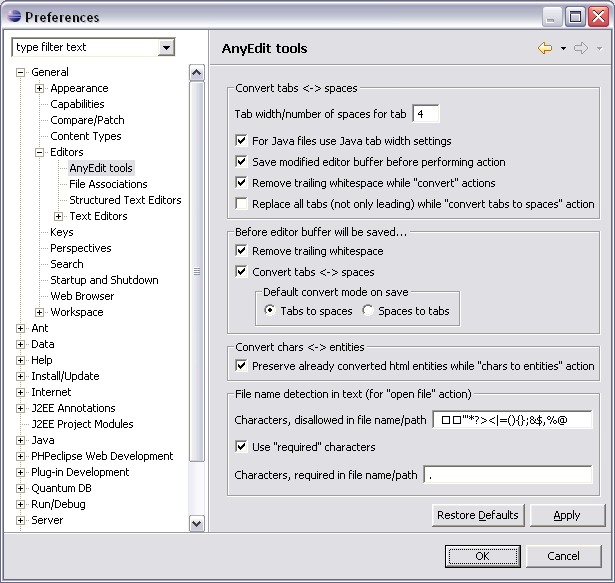
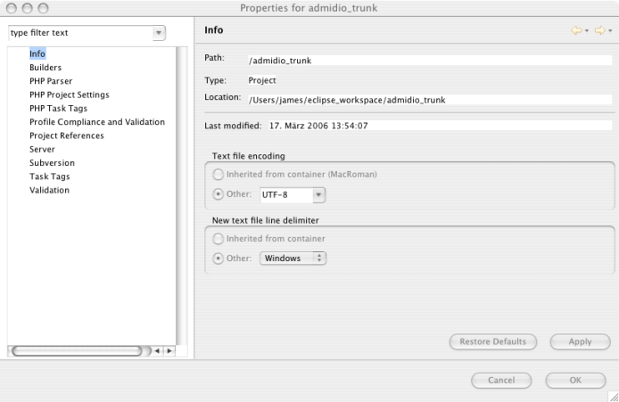

Das vorliegende Dokument soll dabei helfen, sauberen, für andere nachvollziehbaren, Code zu generieren. Die hier aufgeführten Punkte sind lediglich als Umsetzungsvorschläge zu verstehen. Im Zweifelsfall sollte man einfach den Verstand einschalten und nachdenken, ob das alles wirklich so uebersichtlich ist, wie man sich das vorgestellt hat.
Man sollte beim Programmieren schon gewisse Disziplin walten lassen. Dazu gehört das Vermeiden von Umlauten, einheitliche Codeeinrückungen und noch viel mehr. Aber dazu mehr in den anderen Kapiteln...
Dieses Dokument ist übrigens noch nicht fertig. Wer möchte kann gerne eigene Kapitel oder Anmerkungen hinzufuegen. Aus diesem Grund habe ich das Dokument in SVN eingecheckt.
Zurück zum InhaltsverzeichnisEinrückungen gehören zu den wichtigsten Mitteln um den Code strukturiert zu halten.
Wir haben uns für Einrückungen in Höhe von vier Leerzeichen entschieden. Das heißt, in der Entwicklungsumgebung muss eingestellt sein, dass ein Tab vier Leerzeichen entspricht. In Eclipse muss man, wenn man mit PHPeclipse arbeitet, dies sogar an zwei Stellen tun.
Das ist aber erst die halbe Miete. Beim Abspeichern sollte man nämlich darauf achten, dass die Tabs die man eingefügt hat wieder in Blanks umgewandelt werden. Dies erledigt in Eclipse das praktische Plugin AnyEditTools. Einmal installiert, muss es natürlich auch entsprechend konfiguriert werden. Anbei ein Screenshot der Einstellungen:

Zurück zum InhaltsverzeichnisMit Kontrollstrukturen sind folgende Elemente gemeint:
if((bedingung1) and (bedingung2))
{
action1;
if(bedingung3)
{
action2;
}
}
elseif((bedingung4) or (bedingung5))
{
action3;
action4;
}
else
{
defaultaction;
}
Hier die Erläuterung:
switch(bedingung)
{
case 1:
action1;
break;
case 2:
action2;
break;
default:
defaultaction;
break;
}
Zurück zum Inhaltsverzeichnis
Ein Funktionsaufruf geschieht immer ohne Leerzeichen zwischen dem Funktionsnamen, der öffnenden Klammer und dem ersten Übergabeparameter. Die einzelnen Parameter werden mit Komma und Leerzeichen von einander getrennt. Hinter dem letztem Parameter wird ebenfalls kein Leerzeichen mehr eingesetzt. Anbei wieder ein Beispiel:
$var = funktion($para1, $para2, $para3);
Wie oben gezeigt steht auf der linken und rechten Seite des Gleichheitszeichen jeweils ein Leerzeichen. Wenn mehrere Funktionsaufrufe und damit Variablenzuweisungen im Block untereinander stehen, kann, um die Lesbarkeit des Codes zu gewährleisten, davon abgewichen werden:
$kurz = foo($para1);
$langer_name = foo($para2);
Zurück zum Inhaltsverzeichnis
Beim Definieren von Funktionen wandern die Argumente mit Default-Werten ans Ende der Deklaration. Funktionsnamen, Argumente und Rückgabewerte sollten selbsterklärend sein. Hier ein Beispiel:
function addition($wert1, $wert2, $wert3 = '')
{
if (length(wert3) == 0)
{
$ergebnis = $wert1 + $wert2;
}
else
{
$ergebnis = $wert1 + $wert2 + $wert3;
}
return $ergebnis;
}
Zurück zum Inhaltsverzeichnis
Damit auch andere die eventuell vorhanden Bugs in Eurem Code fixen können, muss dieser nicht nur übersichtlich, sondern auch verständlich sein. Daher ist der ein oder andere Kommentar unumgänglich. Hier ist der richtige Mittelweg zu wählen. Zu viel Kommentar verschränkt den Blick auf das wesentliche (den Code), zu wenig Kommentar lässt Ihn undurchdringbar erscheinen...
Kommentare müssen ebenfalls eingerückt werden. So dass sie auf der selben Ebene wie das zu kommentierende Konstrukt stehen. Ein- bis zweizeilige Kommentare werden wie folgt dargestellt:
//Dies ist die erste Zeile ueberfluessiger Kommentar
//Dies ist die weite Zeile ueberfluessiger Kommentar
Wie oben zu sehen ist, sollte auch in Kommentaren von Umlauten abgesehen werden. Erstreckt sich ein Kommentar über mehr als 2 Zeilen sollten Block-Kommentare eingesetzt werden:
/*
*
* Dieser Kommentar koennte jetzt noch ewig weitergehen...
* Dieser Kommentar koennte jetzt noch ewig weitergehen...
* Dieser Kommentar koennte jetzt noch ewig weitergehen...
* Dieser Kommentar koennte jetzt noch ewig weitergehen...
* Aber soviel Spass habe ich auch nicht beim kommentieren!
*
*/
Zurück zum Inhaltsverzeichnis
Man sollte um den PHP-Code herum immer die Tags <?php und ?> setzen und nicht die Kurzform <? ?>. Dies ist die einzige Möglichkeit zu gewährleisten, dass der Code auf allen Plattformen auch als PHP-Code interpretiert wird.
Zurück zum InhaltsverzeichnisJede Datei des Admidio-Projekts sollte am Anfang der Datei einen DocBlock enthalten. Dieser muss eine kurze Erklärung des PHP-Scripts enthalten. Außerdem sind hier fein säuberlich alle möglichen Übergabewerte des Scripts aufgelistet...
Hier ein Beispiel aus der Datei dates_function.php:
/******************************************************************************
* Verschiedene Funktionen fuer Termine
*
* Copyright : (c) 2004 - 2006 The Admidio Team
* Homepage : http://www.admidio.org
* Module-Owner : Markus Fassbender
*
* Uebergaben:
*
* dat_id: ID des Termins, der angezeigt werden soll
* mode: 1 - Neuen Termin anlegen
* 2 - Termin löschen
* 3 - Termin ändern
* url: kann beim Loeschen mit uebergeben werden
*
******************************************************************************
*
* This program is free software; you can redistribute it and/or
* modify it under the terms of the GNU General Public License
* as published by the Free Software Foundation; either version 2
* of the License, or (at your option) any later version.
*
* This program is distributed in the hope that it will be useful,
* but WITHOUT ANY WARRANTY; without even the implied warranty of
* MERCHANTABILITY or FITNESS FOR A PARTICULAR PURPOSE. See the
* GNU General Public License for more details.
*
* You should have received a copy of the GNU General Public License
* along with this program; if not, write to the Free Software
* Foundation, Inc., 59 Temple Place - Suite 330, Boston, MA 02111-1307, USA.
*
*****************************************************************************/
Zurück zum Inhaltsverzeichnis
Wenn Dateien in SVN eingecheckt werden, muss auch eine Commit-Message verfasst werden. Bei einem Bugfix gehört in die Messages auf jeden Fall die zugehörige Bugnummer und und eine kurze Beschreibung der verrichteten Tätigkeiten...
Zurück zum InhaltsverzeichnisKlassen sollen selbstsprechende Namen erhalten. Kryptische Abkürzungen sollte man wenn möglich vermeiden. Klassen sollten immer mit einem Großbuchstaben beginnen.
Funktionsnamen sollten im camelStyle (vielen auch als camelCaps oder laOlaStyle bekannt) geschrieben werden. Dies soll heißen, dass der erste Buchstabe klein geschrieben ist und der erste Buchstabe des nächsten Wortes groß. Beispiel:
getData();
Bei Konstanten werden alle Buchstaben groß geschrieben und die einlenen Worte innerhalb de Namens durch Unterstriche getrennt. Beispiel:
TBL_ORGANIZATIONSZurück zum Inhaltsverzeichnis
Um die Entwicklung auf verschiedenen Systemen zu gewährleisten muss ein einheitliches Format genutzt werden:
In Eclipse kann man dies entweder global konfigurieren, oder aber auf Projektbasis(Was in meinen Augen mehr Sinn macht.). Hier ein Screenshot von den Projekteinstellungen:

Besonders wenn man vorher in einem anderen Zeichensatz gearbeitet hat, ist es wichtig, dass man kontrolliert ob seine eingegeben Sonderzeichen nach dem Umstieg noch vorhanden sind...
Zurück zum Inhaltsverzeichnis